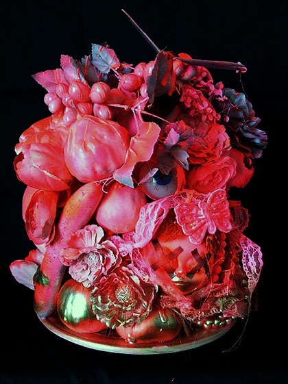
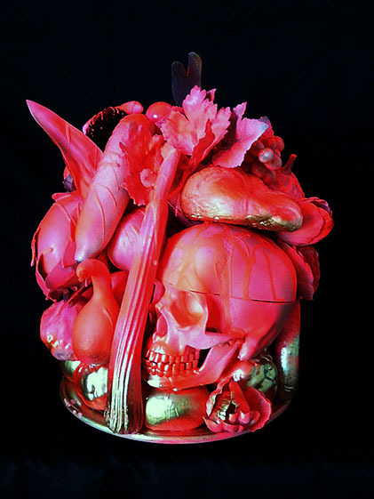

水玉コレクション No. 6 (2010)
for orchestra
3333, 4331, 5perc, hp, pf, strings
Duration: 16min.
commissioned by NHK Symphony Orchestra
performed by Pascal Rophé, NHK Symphony Orchestra
created in Tokyo, June.22.2010
The phenomenon of sound is generally invisible, but, this music is created to enable each listener to trace the outlines of sound movement and feel shapes, colors, texture and the space beside them in their own inner perception. In this “Dots Collection No. 6”, the appearance and disappearance of excessively decorated clusters of sound are depicted throughout the work.
音という現象は一般的に目に見えないが、この音楽は聴く人それぞれが音の動きの輪郭をなぞり、形、色、質感、その周りの空間を、各々の内的な知覚の中で観察することを意図して作られている。この「水玉コレクション」第6番では、ひとつひとつ現れては消えていく一打の過剰に装飾された音の塊が、全編を通して描かれている。
 inspired by Kakushin Nishihara 'sacrifice'